LADAKH – National Highway 21
Karma
Road
( riding 2
wheels to 18,000 feet )

1972…… it is 4am in Bombay. Flying from Singapore to London, my plane has stopped here to refuel. As I walk across the tarmac to the terminal building, the smells of India waft across the hot night air. It is a strange and exotic place to me , more like landing on another planet.
Two years later, I fly east again towards Australia. We leave Bahrain and for three cloudless hours I watch the Indian subcontinent glide by underneath. We start over a brown and dry Pakistan and as we cross India the country gradually changes colour, until it is a bright emerald green when we leave it behind over the Bay of Bengal. Looking down I think, maybe someday I will get to spend more than just one hour in India.
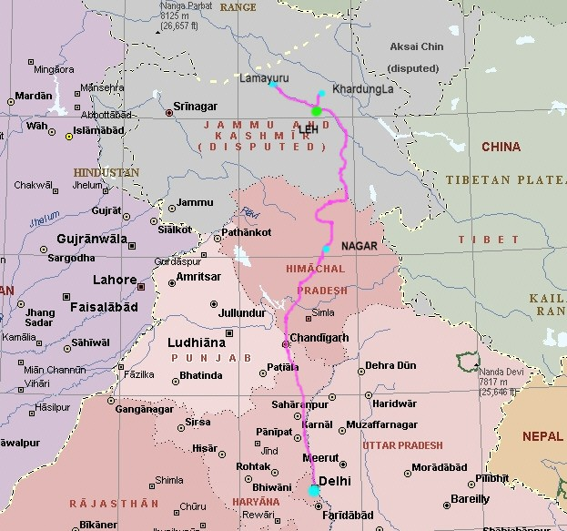
Day zero…….
March 2000, and there is two feet of snow outside my window in Nova Scotia. I am surfing the web when a motorcycle travel link catches my eye….
Riding the Highest Passroads in the World.
I immediately think of the Andes mountains in South America, but when I click on Classic Bike Adventure's link I am suddenly in Kashmir at 18,000 ft. riding a 500cc single Royal Enfield Bullet motorcycle .
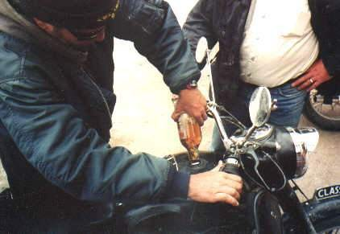
Brit bikes prefer their beer warm ......
Day 1:
July , 2000 Halifax, Nova Scotia
My duffel bag is packed, and everything is down to a minimum. I have my helmet, ballistic jacket, gore-tex boots and rainpants, a small sleeping bag and a thermorest mattress. One pair shorts, socks , underwear, two jeans (black to hide the dirt), a bunch of T shirts and a light fleece sweater. My Pelican case with a Pentax MX camera and 4 lenses, a pair of sandals and malaria pills rounds it out. ( I will only need the pills when I am below 6000 feet ). As a friend once told me ….. “ lay it all out on the floor, take half as much stuff and twice as much money. Do that three times and you are ready to travel ”.
I take a
Cadillac taxi to the airport, my next one will be very different.
I fly west 2 hours to Toronto then go to the Lufthansa
check-in
desk. The girl asks me what colour is my frequent flyer card ?
Sorry, I don’t know . The number is in my head but I never
carry the card.
She looks at me for a moment
and says ; “ Well, I think it’s gold………
so I’m putting you in business class to Frankfurt........
we’re overbooked today ”.
She smiles, I smile. Little
do I know that Tree’s Good
Karma Tour 2000
has just begun.
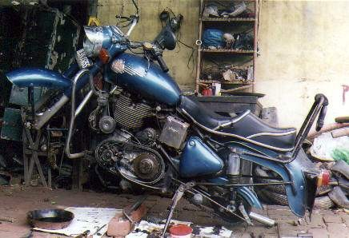
Let the games begin........
Day 2:
Frankfurt, Germany
I have a good flight over, sit next to a Russian fellow who sells Lada cars in Montreal. Only Quebecers will buy them it seems. We have two big seats up in the nose of the 747, china plates and a real menu…… nice change from Scare Canada. We land in Frankfurt at 10am in a lightning storm and pelting rain. I only have to wait a few hours before the next jumbo takes me east. We leave again at 2 pm, now I am back in tourist class, crammed in, but at least I have a nice window seat. Only eight hours to go. The fifty-ish Indian couple next to me are heading back to Delhi from the USA. He is a professor in Chicago, she tells me that the heat in Delhi is hard on her, she has been away for twenty years now. Hungary goes by underneath us somewhere. Later when the clouds clear we are over the Black Sea, the water stretches to the horizon, endless. Around dusk the Caspian Sea slides past, soon we will be over Kabul and then down into the Indian subcontinent.
As we land in New Delhi it is after midnight. I walk into a modern new arrivals hall and get my baggage. There are no hassles at customs, they check my 6 month India tourist visa, look at me once, and give it the rubber stamp. I think ' Can it be this easy ? ' …….. apparently yes. I change $ 200 US into rupees ( about nine thousand ) and look for my contact, a Sikh taxi driver. He is easy to spot, his Sikh turban is one of only a few in this crowd. He has a sign with “Tree” written in big letters. I follow him out to an old diesel Austin Ambassador like many other taxis in India, the most popular brand. He works for the hotel I will be staying at in the centre of town, and Peter has told me he is very reliable. There are wild stories about taxis in New Delhi……. Peter knows many and has strongly advised me to use his man for the airport trip………. it doesn’t take much convincing.
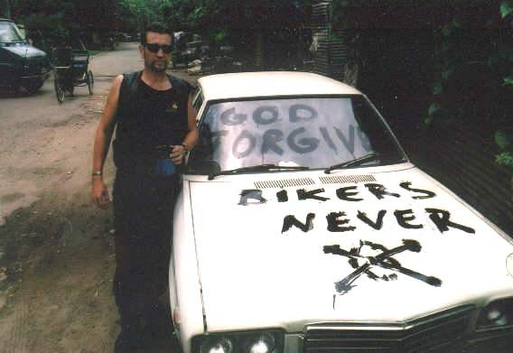
Transportation as an 'artform' .
We drive north into the city on deserted streets for a while. I see human forms sleeping on the grass beside parked rickshaws on some roads, the odd blanket covering them, sometimes not. A large black object is slowly coming the other way, it is huge and hard to recognize. We pass an elephant shuffling along, his mahout sitting high up on top. Very impressive sight at 2 am…… it will be my last elephant. Then we are on a main road surrounded by 5 ton trucks. Not one seems to have tail lights, only the brakes flash occasionally. It is surreal. All this chaos and no lights. They seem to know what they are doing. From 6am to 9pm trucks and buses are not allowed into Delhi, it would choke the city. Now they are making all their cargo deliveries and pick ups.
I get to
my one star hotel (seems to be at least a 2 star to me), Hotel
Fifty Five. It is at # 55 H block, Connaught
Circle, right in the centre of Delhi. I will come to like this place
a lot, the staff are friendly, honest (see story at end) and Peter
always uses it for his tour groups. The price is 1100 rupees or about $
25 US single, and air conditioned. The rooms are small but clean. Even
though it is 3am there are staff still working. A boy carries my
gear up one floor to reception. I check in and get a bottle of pop
delivered for 19 rupees , about fifty cents.
Room service here takes about 30 seconds. It has been 28 hours since
I left home, I am ready to sleep.
Day 3:
New Delhi
A sign in my bathroom says “ Turn the fountain off after use please”. Must be the shower . Peter shows up at 10am, he has been at the internet centre doing email. Originally from Berlin, has been in India for over 20 years. His company, Classic Bike Adventures, ( www.classic-bike-india.de ) owns 25 Enfield Bullet 500 motorcycles. His country club resort in Goa caters to European bike riders, doing winter tours around the amazing palaces, cities ( and deserts ) of Rajastan and southern India. During the summer heat and monsoon rains he trucks bikes to Himachal Pradesh state for tours in high Kashmir and Nepal .
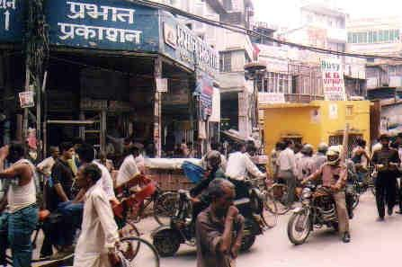. .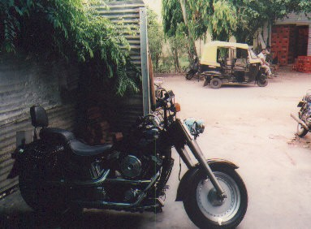
We head
out into a wall of heat for the bazaar where we will take care of some
business. I have some money to change and he has errands to do before the
plane comes in at midnight with the other riders. We hop into an
autorickshaw,
which careens through the crowded streets with amazing agility. All the
drivers operate a few inches from each other, and I never saw anyone get
hit.
Just
like a school of fish…… these guys are good.
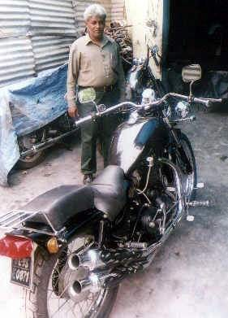.. 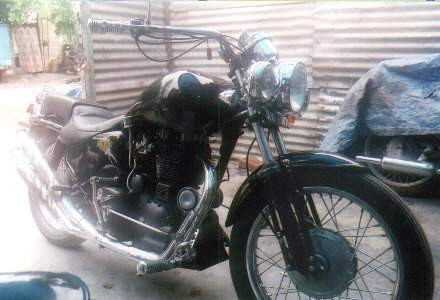
500cc single custom - twin header pipes - handmade tank.
We pay a
visit to Nanna Motors, where they specialize
in only British bikes and Harleys. Nanna,
the owner, has built some amazing custom machines by hand. I wander around
the courtyard and photograph kids working on the dirt floor, Enfields
scattered around. New fenders and tanks hand painted,
with nice pinstriping.
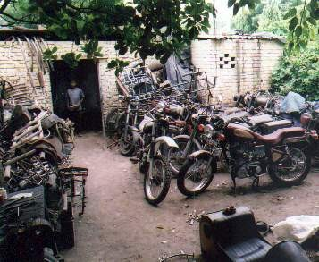... ...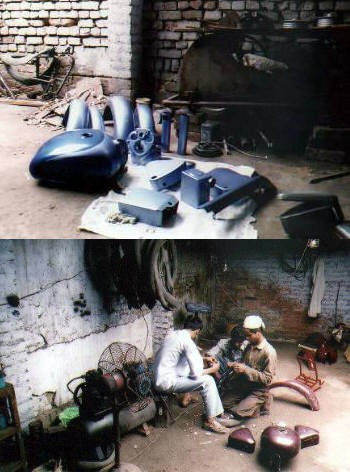
Peter tells me he has all his work done here, it is the best shop in Delhi. Nanna shows me Bullet customs, choppers, a scrambler and even a twin pipe version he built onto the 500 single head with a handmade Harley tank that took many hours . Impressive work. Don’t let anyone tell you they can’t build customs in India…… these are talented people.
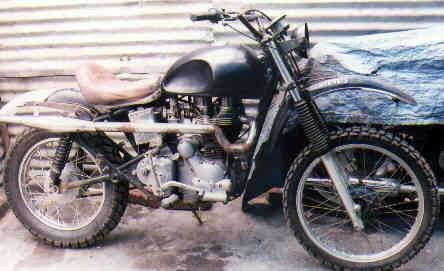. .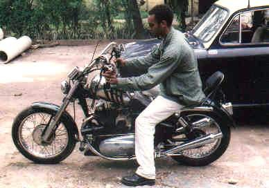
At 10pm we check out of our hotel to pick up the other four bikers at the airport. We load our gear onto a chartered bus. Peter has a complete Bullet engine in a wooden crate to muscle into the rear cargo area. We head for the airport, two drivers in the front. I will find out later why India uses the two driver system . Their plane arrives on time from Vienna . One rider, Uwe (pronounced Oovah ), is easy to spot, wearing his leather bike jacket with rawhide fringes on the sleeves, and a denim vest over it. I also meet Helmut, Richard and Henning, all from Germany. Henning owns an Enfield Bullet at home, while Helmut rides a Yamaha sportbike. Richard has a Kawasaki and Uwe has a Harley chopper, his first and only bike. He tells me later that after he saw Easy Rider as a teenager he decided that was the only bike he would ever own, a chopper. He rides all over Europe on it.
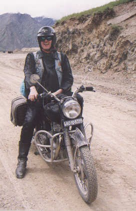. .
Uwe
Day 4:
North through Punjab
.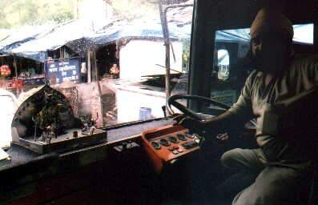
Our Sikh driver with shrine on dashboard.
We head out of Delhi at about 2am. The truck traffic is still going full tilt. Our Sikh driver jams the gears hard while the relief man sleeps on a couch next to him. Lots of passing on the 4 lane divided expressway, we have a fourteen hour , 600 km trip ahead to reach Nagar up in the foothills. Daylight comes as we head northwest across Haryana state towards Chandigar, then turn north and enter Punjab, home of the Sikhs. It is 6am and I have been watching India awaken for the last hour out my window. Many families sleeping outside on flat rooftops, wooden bedframes strung with rope. It feels like I have x-ray vision, people are doing their morning rituals as our bus passes by. Stretching arms on rooftops cots, yawning faces, people riding bikes, donkeys, walking. Water buffalo tied in front yards. People squatting in the fields, water jug in one hand to wash with when they finish….. no toilet paper here. I slowly come to realize during the trip that they may be onto a good thing. India is organic, that’s for sure. In some places they have even banned plastic bags…… less garbage to blow around .
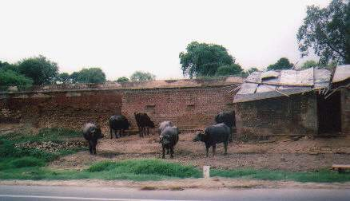. .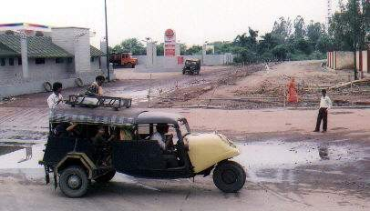
We enter Himachal Pradesh state, and start climbing up into the foothills. The flat farmland changes rapidly to green hills and brown rivers disgorging the rain and silt from the Himalayas. Our relief driver is shifting down much more often now. The scenery becomes tighter and curvy. Narrow valleys, rivers carve through the canyons, waterfalls drop from overhead. Many buses and cargo trucks going in both directions.
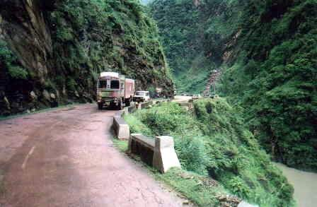. .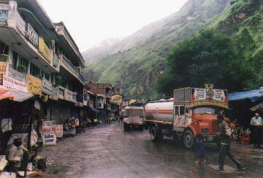
This is the main supply route to Kashmir/Jammu state. There is another northern route from Srinagar to Leh but the overlooking Pakistan artillery can knock out traffic near Kargil at will ( scene of the July ’99 war ). The army sends fuel, ammo and men up this southern route. The road is only open four months of the year due to snow, so it will be crowded.
We arrive in Nagar in the Beas river valley about 5pm and check into the Hotel Ragini. It is a two story wooden hotel with a wonderful view from the open air rooftop patio dining area on top. They sell bottles of local red plum juice which is very sweet, and the food is excellent. I share a room with Henning from Berlin since we are both non smokers and probably about the same age. Neither of us snore, so it works out well.
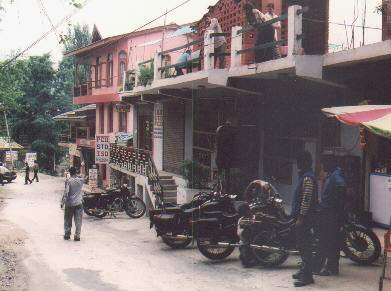. .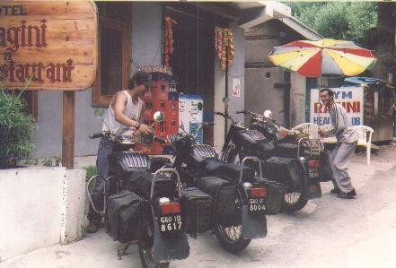
We are now at 6,000 ft altitude. This is Peter’s base camp for the mountain tours. There are ten bikes tarped outside, and a workshop at the end. Tomorrow we will get our first taste of driving on the left, shifting on the right. I meet Martin, a karate and Tai Chi instructor from Goa. He is also German and has ridden Enfield Bullets for 20 years. He will ride at the rear of our group. Peter and Martin both speak fluent English, much better than my passable German. So does the support crew going with us. This will be a big help for me, as I will learn a lot of local information from them as we travel through the country.
Nyima
the camp boss , and Tensing
his
best boy, are Tibetan.
Mickey
the
cook is from Nepal,
Ashok
the
mechanic is Nanna's son from Delhi.
Raju
owns the second jeep and is from Manali.
Pandit
and NN are the camp helpers.
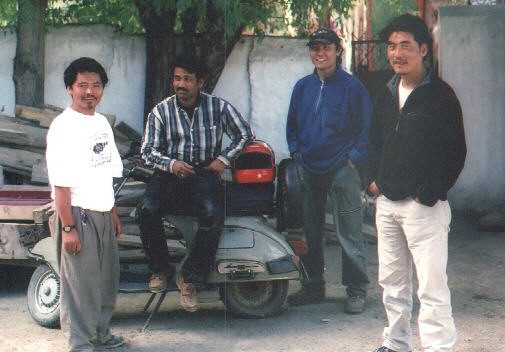
Mickey, Ashok, Tensing and Nyima
| ------- To India part 2 --------- |